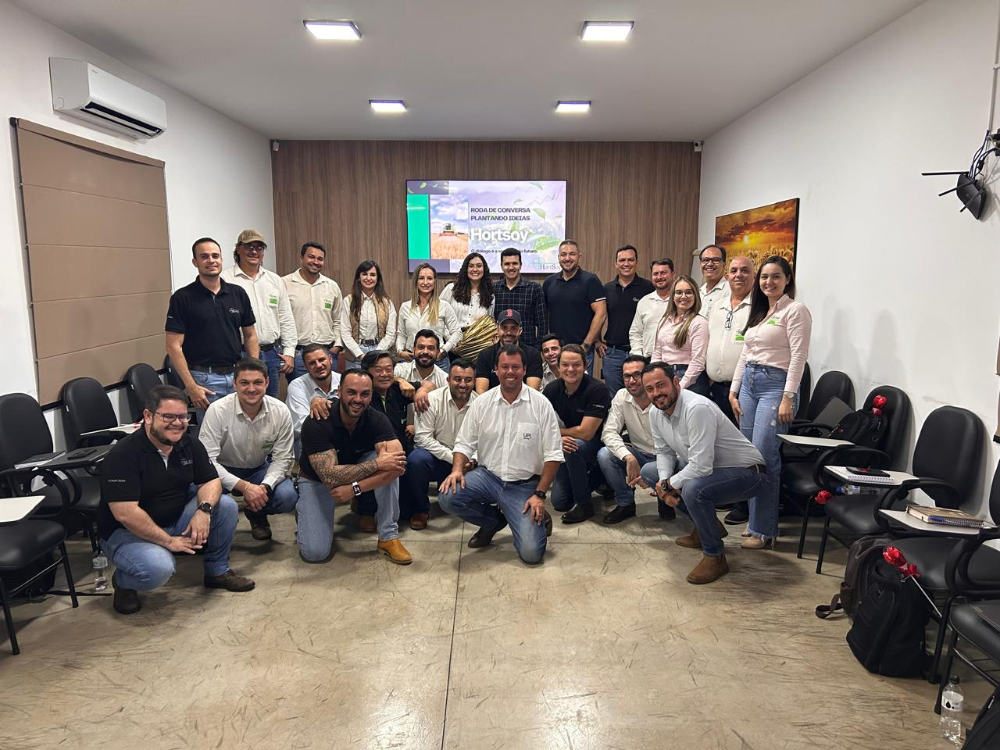
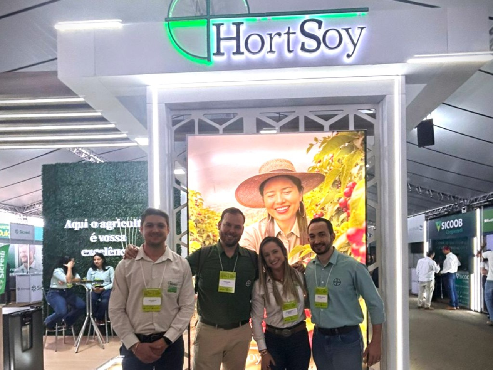
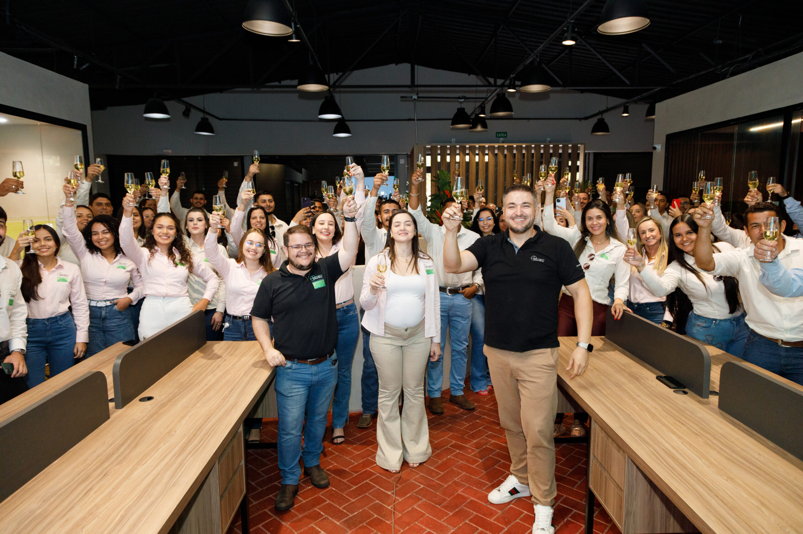
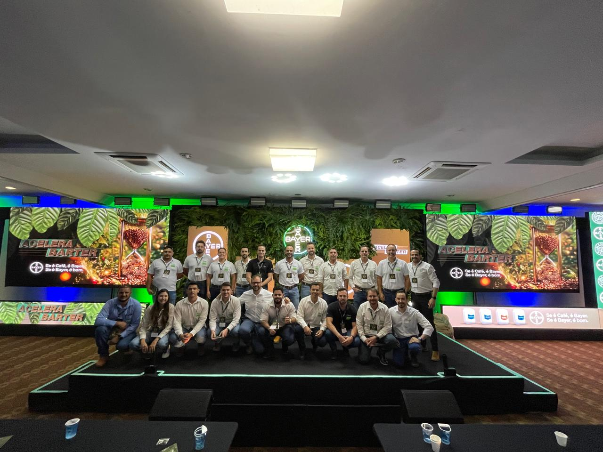
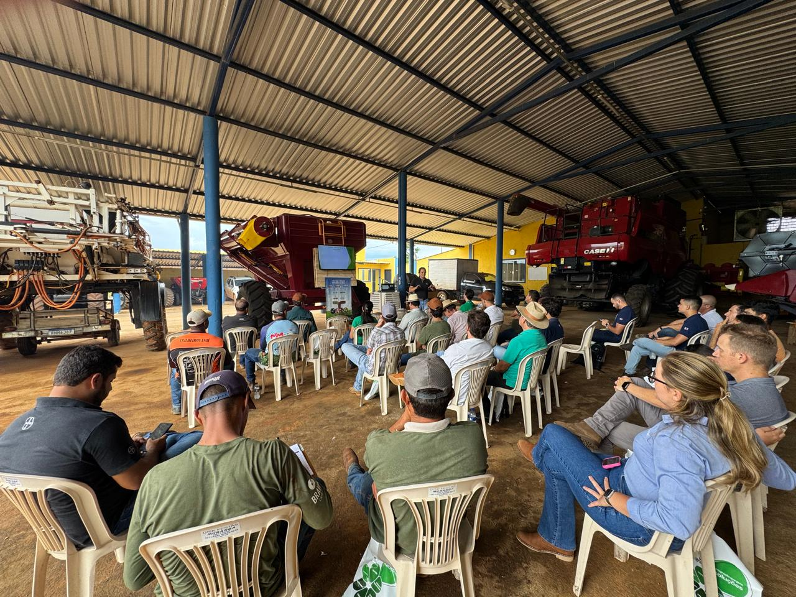
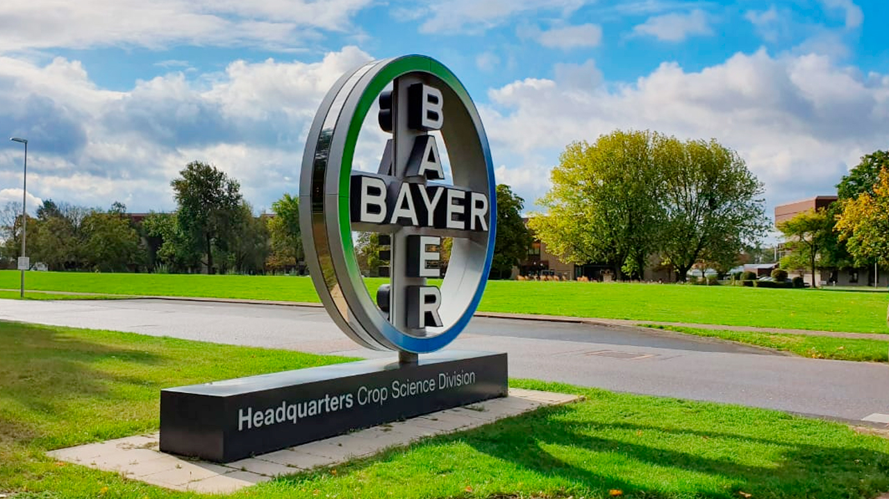

Plantando Ideias – Um Encontro Inspirador no Grupo Hortsoy
Encontro focado no engajamento, bem-estar e no compartilhamento de conhecimento essencial para impulsionar a inovação no dia a dia da equipe Hortsoy.
Ler Post CompletoA Hortsoy é movida pela inovação e pelo compromisso com o sucesso do produtor rural. Localizada em Uberaba, MG, nossa empresa se destaca no fornecimento de insumos de alta qualidade e assistência técnica especializada.
Acreditamos que a agricultura do futuro une rentabilidade, sustentabilidade e tecnologia. Por isso, investimos nas melhores soluções para aumentar a sua eficiência de forma consciente.
Missão: Potencializar a produtividade agrícola com sustentabilidade.
Visão: Ser referência nacional em tecnologia e inovação para o campo.
Valores: Ética, Transparência, Inovação e Respeito à Terra.
Acompanhe nossos eventos, parcerias tecnológicas e os principais marcos do agronegócio.

Encontro focado no engajamento, bem-estar e no compartilhamento de conhecimento essencial para impulsionar a inovação no dia a dia da equipe Hortsoy.
Ler Post Completo
A Hortsoy marcou presença com soluções tecnológicas inovadoras de bioestimulantes, nutrição de plantas e controle biológico para otimizar os resultados das safras.
Ler Post Completo
Celebramos a inaugururação oficial de nossa nova sede administrativa em Uberaba-MG. Um espaço moderno planejado para promover integração, colaboração e suporte de alta eficiência.
Ler Post Completo
Nossos consultores estiveram presentes no Barter Café da Bayer em Ribeirão Preto-SP, fortalecendo a parceria comercial e as inovações no manejo e mercado cafeeiro.
Ler Post Completo
Um encontro de campo focado na transferência de novas tecnologias de nutrição avançada e manejo de solo para alavancar a produtividade da cultura da soja.
Ler Post Completo
Uma parceria sólida que une biotecnologia de ponta, defensivos e suporte especializado para reduzir o estresse de gestão e otimizar cada safra no campo.
Ler Post CompletoOlá! Como podemos ajudar sua lavoura hoje? Fale com nosso especialista.
Iniciar Conversa